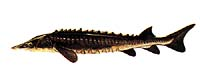

Lake Sturgeon (Acipenser fulvescens) | |||
 Description The sturgeon is one of the largest and most ancient of freshwater fish in North America. These fish seem to have survived from the Cretaceous period that ended around sixty-four million years ago -- around the time of the extinction of the dinosaurs. Saskatchewan has only one species of this incredible fish. The lake sturgeon, can attain a size of 2.5 metres in length and weigh over 140 kilograms. It has been known to live for more than 150 years. Once numerous in our lakes and rivers, the lake sturgeon is struggling to survive today because of over-fishing and habitat loss. The two most distinguishing features of the sturgeon are
Other noticeable features include a heterocercal tail (shark-like tail with large upper lobe) and a shovel-like snout with four barbels which serve as sensory organs for locating food. The mouth is toothless and they are primarily bottom feeders feeding on insect larvae, mollusks, worms, small crustaceans and a variety of aquatic vegetation. A single dorsal fin is located far back on the body. The appearance of the fish changes as the fish ages. Young sturgeon have sharp snouts, and the body is reddish in color with dark grey or black blotches on the back and sides. Adult sturgeons are olive brown to grey on the back and sides, and white on the ventral surface of the head and body.
Reproduction They are a very slow maturing fish. It takes about 25 years for the fish to weigh 14 kilograms and a length of 1 metre. Lake sturgeons reach sexual maturity at the age of 15 to 30 years, males maturing before females. Late, springtime spawning occurs every two or three years for males and every four to six years for females. This limits the growth of the sturgeon population and, along with its very slow growth rate, decreasing habitat and overharvesting contributes to the decline in numbers of the species. Spawning occurs in the rocky shorelines of rivers near strong currents where the water is 0.6 to 5 metres deep and the temperature range is 13 to 18 degrees Celsius. A single female arrives at the spawning grounds and is met by several males. The spawning of sturgeon is characterized by lots of rolling near the bottom and leaping out of the water by the males. No nest is made and a single female releases hundreds of thousands of dark-colored eggs. These measure about 3 millimetres in diameter and stick to the rocks and logs on the bottom. Strong currents are needed to disperse the eggs and keep them from clumping, which decreases the hatch rate. The current also supplies and removes sediment and metabolic waste that could destroy the eggs. The eggs hatch in about a week.
Habitat In Saskatchewan, sturgeon can be found in Cumberland Lake, the Churchill River and the Saskatchewan River. You would need a special licence to angle for this species in Saskatchewan.
Interesting Tidbits About Lake Sturgeon
| |||